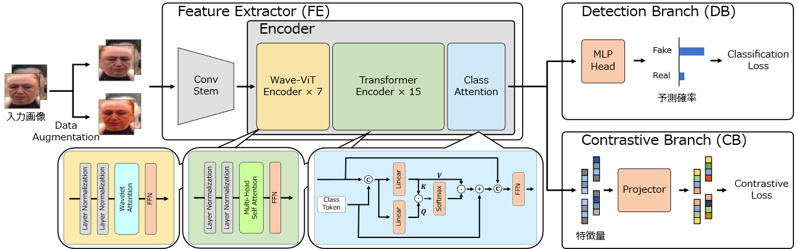
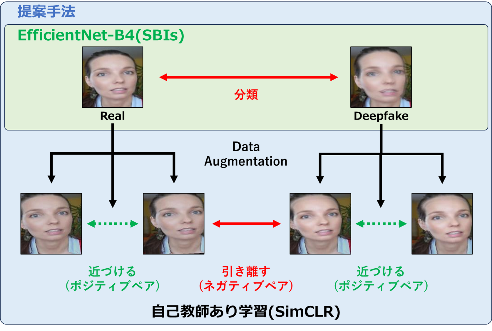
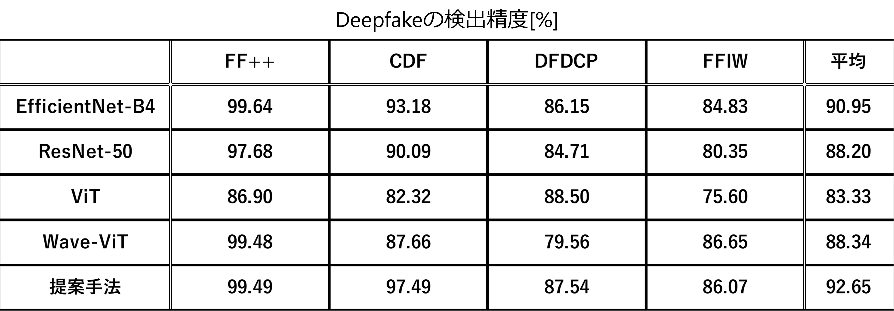

自己教師あり学習を導入したWavelet Vision TransformerによるDeepfake検出の高精度化

Abstract
深層学習により画像上の顔の交換や属性・表情を変更するDeepfake が問題となり，Deepfakeにより生成さ
れた画像を検出する研究が活発に行われている．近年，画像認識分野においてVision Transformerベース
の手法が優れた性能を発揮することが報告されているが，Deepfake 検出問題においては畳み込みニューラ
ルネットワークベースの手法と比較して性能が低下することが分かっている．そこで，本研究では自己教師
あり学習を導入したWavelet Vision Transformerによる高精度なDeepfake検出法を提案する．
Wavelet Vision Transformerは，Deepfake 検出において画像中の重要な高周波成分を捉えることがで
きるモデルである．表現学習の一種である自己教師あり学習と組み合わせることで，Deepfake画像におけ
る加工の痕跡を正確に検知することが可能となり，高精度な検出が期待できる．
提案手法におけるペアの扱い方
画像の変動と偽造痕跡の違いを明確に区別するモデルを学習するために自己教師あり学習を導入する．
Real 画像及びDeepfake 画像をData Augmentation により摂動を与えてデータ拡張し，これらを
区別するように学習する．

4つのデータセットに対する各手法のAUC
Wave-ViTに自己教師あり学習を導入した提案手法はEfficietnNet-B4よりも平均AUCが1.70[%]向上した．
ウェーブレット変換の導入による特徴抽出器の性能向上に加えて，自己教師あり学習の導入により画像上の変動とDeepfake
の偽造痕跡を区別できるようになったためと考えられる．

Bibtex
@inproceedings{高瀬2023,
author = {高瀬 俊希 and 山内 悠嗣},
title = {自己教師あり学習を導入したWavelet Vision TransformerによるDeepfake検出の高精度化},
booktitle = {ビジョン技術の実利用ワークショップ},
year = {2023},
}